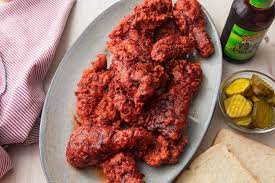

Chef John's Nashville Chicken

Nashville Chicken picture
Fried Chicken in Nashville style that really kicks!
Always enjoy with pickles
Ingredients
- 1 whole Chicken cut into 8 pieces
- 1 tablespoon of Kosher Salt
Marinade
- 1 cup buttermilk
- quarter cup pickle brine
- 2 tbs Louisiana style hot sauce
- 1 large egg
Flour
- 2 Cups ap flour
- 2 tsp tbl salt
Sauce
- Quarter cup of butter
- Quarter cup of lard
- Half tsp Pepper
- 2 Tbs Cayenne
- 1 Tbs Brown Sugar
- 1 tsp Paprika
- half tsp Garlic Powder
- half tsp kosher salt
- 1 cup vegtable oil for frying
Steps
- Salt Chicken and refridgerate overnight
- Combine Marinade and chick, let sit covered in the fridge for 2 to 4 hours
- Mix flour and salt together and bread chicken
- Fry Chicken till internal temperature of 160 degrees F
- Make sauce and dip in the cooked Fried Chicken
Return home